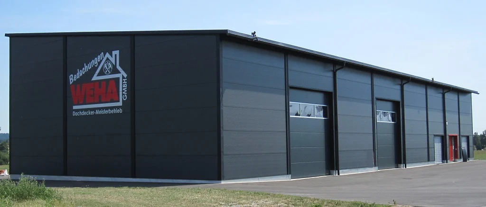
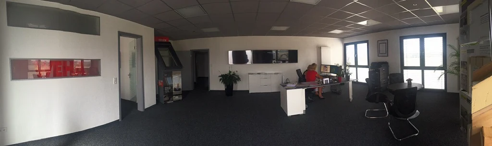
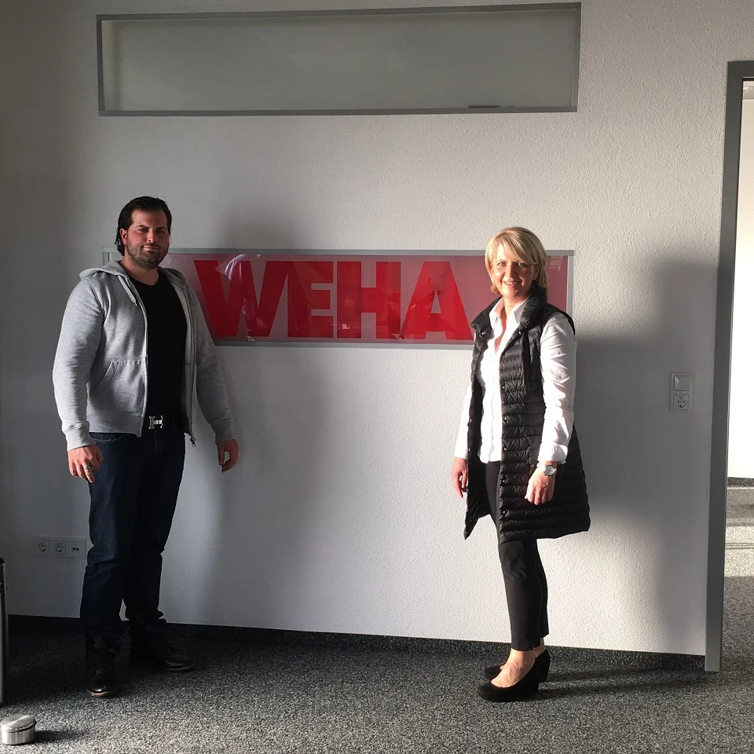

Über WEHA
Familie. Handwerk.
Verantwortung.
Seit 1994 steht WEHA Bedachungen für Dacharbeiten mit einem persönlichen Anspruch. Unser Familienbetrieb ist in Dinkelsbühl zu Hause.
Familie Wegert
Wir stehen
hinter unserer Arbeit.
Ein Dach ist keine Kleinigkeit. Deshalb nehmen wir Beratung, Planung und Umsetzung persönlich.
Wir begleiten Ihr Vorhaben aus einer Hand. Dabei sollen die geplanten Arbeiten und die damit verbundenen Kosten für Sie nachvollziehbar bleiben.
Unsere Bauvorhaben finden sich in Dinkelsbühl und der Region, aber auch in München, Nürnberg und weiteren Städten. Die Projektgalerien geben einen konkreten Einblick.
Zimmererarbeiten übernimmt eine Zimmerei, mit der wir seit vielen Jahren vertrauensvoll zusammenarbeiten. Ein eigener Kran ergänzt unsere Ausstattung.
Unsere Arbeit kennenlernen


Ein Blick zurück
30 Jahre WEHA.
Ein Stück Geschichte.
2024 jährte sich die Gründung zum 30. Mal. Der Beitrag aus dem bisherigen Internetauftritt gibt einen Einblick in diesen Meilenstein.
Jubiläumsbeitrag öffnenDer nächste Schritt.
Ein gutes Dach.
Beginnt mit einem Gespräch.
Neubau, Sanierung oder eine Frage zum Bestand – wir hören gerne von Ihnen.
Reden wir darüber 09851 / 5893666